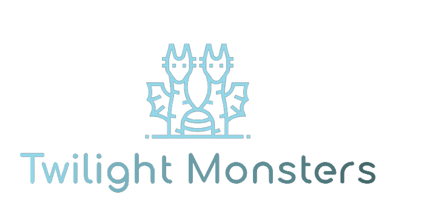

Twilight
Monster
Twilight Monster est une application de gestion de monstres pour Donjons & Dragons 5e édition. Elle permet de chercher, trier et créer des blocs de statistiques (Statblocks) adaptés à chaque monstre, le tout en stockant localement les données pour minimiser l'empreinte écologique.
